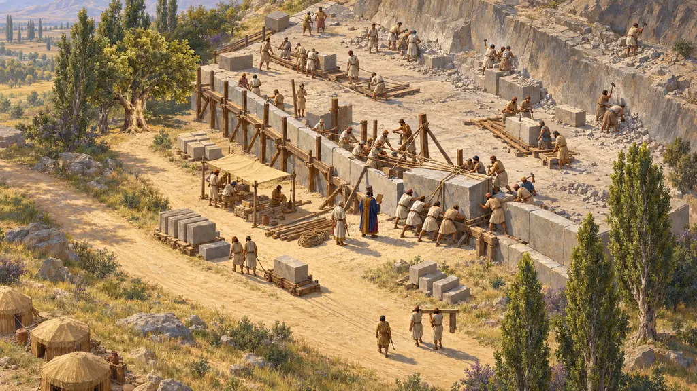
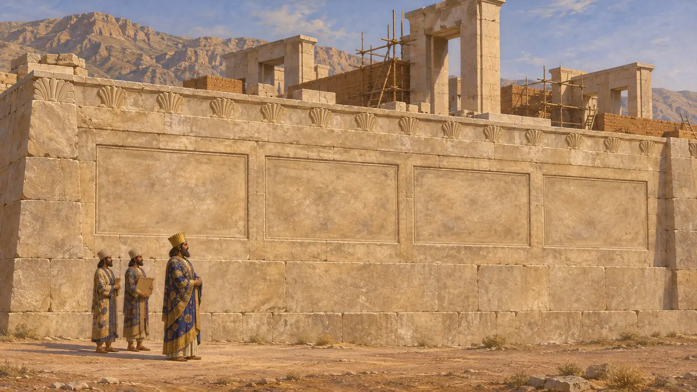
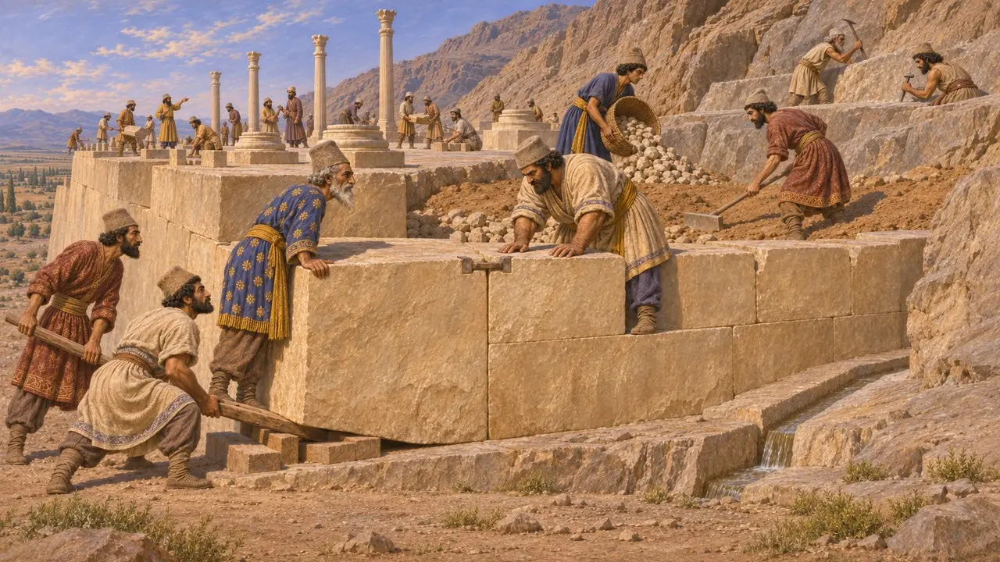
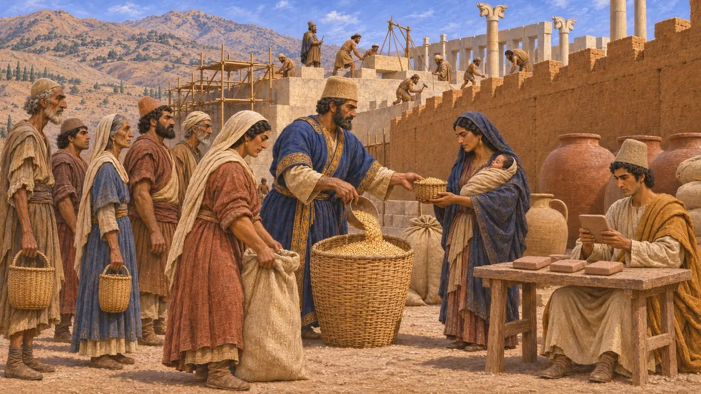
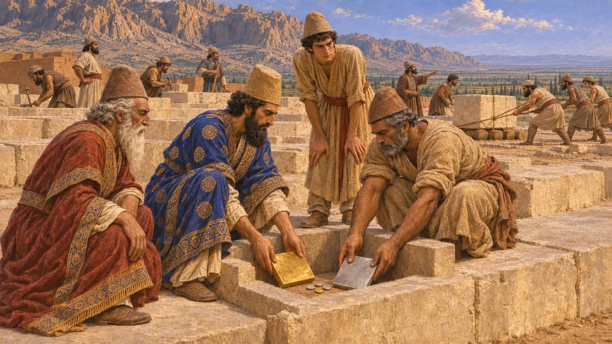
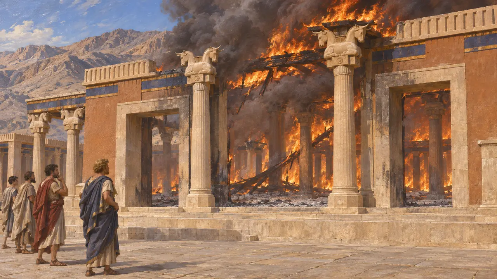

紀元前518年頃から、ダレイオス1世はペルシスのマルヴ・ダシュト平原にある山のふもとに巨大な石の基壇を築かせ、その上に宮殿群を建てた。この地の本来の名はパールサで、のちにギリシア人がペルセポリスと呼んだ。ここはペルシア本土の儀礼の中心となった。そこに置かれた行政機関が残した粘土板は、帝国が日々どのように動いていたかを伝える、現存する最も豊かな記録である。
ゲームでは： パールサのステージは基壇を軸に作られており、ゲームでは紀元前518年ごろの着工としているが、この起点は今も歴史家の間で議論がある。ゲームは要塞文書を基壇の労働者と結びつけているが、実際にはその文書はペルシスの広い範囲を対象としている。

ダレイオス、自らを建設者として名を刻む
同時代の記録ダレイオスは基壇の南側の擁壁に四つの碑文を刻ませた。言語は古代ペルシア語、エラム語、バビロニア語である。エラム語の碑文で彼は、アフラマズダの恵みにより、かつて何も建っていなかったこの地に城塞を築き、堅固で美しいものにしたと述べている。ほかの二つは彼が支配した諸国を列挙し、古代ペルシア語の祈りは、敵の軍勢と飢饉と偽りから国を守るよう神に願っている。
DPd; DPe; DPf; DPg

岩を削り、積んでつくられた基壇
同時代の記録1931年からのエルンスト・ヘルツフェルトと1935年からのエーリヒ・シュミットによる発掘で、この基壇がどのように造られたかが明らかになった。建設者たちは山裾の岩場を平らにならし、くぼみを瓦礫と土で埋め、岩盤に排水路を刻んだ。基壇の表面には巨大な石灰岩の石材を、モルタルを使わずに組み合わせ、金属の留め金でつないで張った。その上にはダレイオスが着工しクセルクセスが完成させたアパダナが建っており、その広間と三つの玄関には72本の柱があった。
E. F. Schmidt, Persepolis I, 1953

労働者たちの粘土板
同時代の記録1933年、発掘者たちは北の防壁から数千枚の粘土板を発見した。その大半はエラム語で書かれ、紀元前509年から493年のものとされる。そこには、大麦、葡萄酒、ビールなどの品々がペルシスからエラムにかけて広く支給されたことが記されており、その範囲は基壇にとどまらない。男女の労働者が配給を受け、出産後の母親には追加の配給があった。後の宝庫文書には、パールサで働くさまざまな民族の職人に銀が支払われたことが記録されている。
R. T. Hallock, Persepolis Fortification Tablets, 1969; G. G. Cameron, Persepolis Treasury Tablets, 1948; W. Henkelman, The Other Gods Who Are, 2008

工事が始まった時期
係争中建設が始まった年を記す文書はない。多くの歴史家は、反乱が収まった後の紀元前518年ごろとし、紀元前515年ごろとする者もいる。アパダナの金と銀の基礎板(DPh)には年代がなく、ともに埋められた貨幣はリュディアとギリシアのもので、ダリク金貨は含まれていない。これを、埋納がダレイオス自身の貨幣発行より前だった徴候と読む者もいる。また、キュロスやカンビュセスがこの地で何らかの工事を始めていたかどうかについても、歴史家の意見は分かれている。
DPh; P. Briant, From Cyrus to Alexander, 2002

紀元前330年の火災
古代の記述ギリシアの著述家はアレクサンドロス以前のパールサについてほとんど知らず、ヘロドトスはその名にまったく触れない。アッリアノスによれば、アレクサンドロスは紀元前330年、クセルクセスによるアテナイ焼き討ちへの報復として、パルメニオンの忠告に逆らって宮殿群を焼いた。ディオドロスとプルタルコスは異なる話を伝え、火は酒宴の席で、アテナイの遊女タイスにそそのかされて始まったという。発掘によって大火があったことは確かめられており、宝庫や諸広間には厚い灰の層が残っている。
Arrian, Anabasis 3.18.11-12; Diodorus 17.72; Plutarch, Alexander 38
出典
- DPd, DPe, DPf, DPg (south wall inscriptions, Persepolis)
- E. F. Schmidt, Persepolis I, 1953
- R. T. Hallock, Persepolis Fortification Tablets, 1969
- W. Henkelman, The Other Gods Who Are, 2008
- P. Briant, From Cyrus to Alexander, 2002
- Arrian, Anabasis 3.18